Page 1 / 原始页码 265
第 5 篇 分子遗传学
癌瘤可以被饿死吗
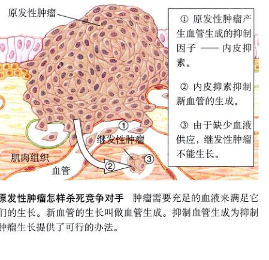
原发性肿瘤怎样杀死竞争对手 肿瘤需要充足的血液来满足它们的生长。新血管的生长叫做血管生成。抑制血管生成为抑制肿瘤生长提供了可行的办法。
① 原发性肿瘤产生血管生成的抑制因子——内皮抑素。
② 内皮抑素抑制新血管的生成。
③ 由于缺少血液供应，继发性肿瘤不能生长。
在对抗癌症的斗争中，近期最激动人心的进展之一被认为是很有可能将肿瘤“饿死”的报道。许多实验室开始观察其可能性，虽然现在尚无确切证据表明这种方法确实能够诊治癌症。关注这种科学进展的最大乐趣也可能是最大挫折，就是你不可能轻易地知道前面会发生什么，更不可能预知结果——在现实的科学研究中，你永远也不可能知道事情最后会怎样。
起初，哈佛大学的研究员 Judah Folkman 博士探究一种肿瘤学家 (oncologist) 都熟知的现象，就是观察除去原发性肿瘤 (primary tumor) 往往会导致继发性肿瘤 (secondary tumor) 的更迅速生长。Folkman 猜测，“原发性肿瘤也许会产生某种物质，抑制了其他肿瘤的生长。”这种物质可以成为对抗癌症的强大武器。
Folkman 开始尝试是否能从原发性肿瘤中分离出能够抑制其他继发性肿瘤生长的化学物质。3年前，他宣称已经找到了两种这样的物质，分别命名为血管生成抑制素 (angiostatin) 和内皮抑素 (endostatin)。
为了了解这两神蛋白质是如何工作的，你要设身处地地把自己想象为肿瘤。为了生长，肿瘤必须要从机体的血流供应中获得生长所需的全部营养，以便产生更多的癌细胞。为了营养获得便利，肿瘤向周围的组织释放一种能促进小血管生成的物质。随着肿瘤一天天长大，更多的血管保证了向肿瘤供应日益增多的血流量。
通过实验，Folkman 发现的两种抗癌物质被证实可以抑制血管生成 (angiogenesis)。血管生成抑制素和内皮抑素通过切断其血液供应来杀死肿瘤。这也许听起来不太像是治愈癌症的好办法，但是想一想——生长着的癌细胞需要足够的营养来供应产生新的癌细胞，切断这些供应，癌细胞就会死亡，说白了就是被饿死了。
通过产生血管生成抑制素和内皮抑素这样的因子，原发性肿瘤抑制了与之竞争的对手的生长，使原发性肿瘤可以独霸一切可用的资源（见图）。
在实验室实验中，血管生成抑制因于使小鼠的肿瘤极度萎缩，这个结果引起全世界学界的轰动。其他的科学家马上着手重复这个激动人心的实验结果，有些成功了，有些则没有。5个大型实验室分离出了各自的血管生成抑制因子并报道了其抗肿瘤效应的结果。国家癌症研究所正在把血管生成抑制素和其他的人血管生成抑制素的实验继续进行下去，初步结果很令人振奋。虽然不是对所有的癌症都有效，但是血管生成抑制素似乎对某些特定的实体瘤特别有效。
更好地了解肿瘤如何诱导血管生成已经成为癌症研究的当务之急。有一个很有希望的线索是组织缺氧 (hypoxia)，随着实体瘤的生长超过了其血管供应，它的内部便会缺氧。缺氧的结果是低氧分压情况下利于生存的基因启动表达，包括一种能够通过促进肿瘤血管生成来增加血流量的基因。了解这个过程对于分析血管生成抑制素如何抑制肿瘤生长或许是一条重要的线索。
但是，肿瘤内较低的氧分压是怎样促进血管形成的？加州大学的 Randall Johnson 博士正在研究肿瘤对缺氧的一种重要反应。结果表明，缺氧能诱导产生一种特异性基因的转录因子（即能激活特定基因转录的蛋白质），进而促进血管形成。这种转录因子叫做 HIF-1，也就是 hypoxia inducible factor-1（缺氧诱导性因子-1）的缩写。该转录因子能够诱导那些血管形成所必须的基因发生转录。
实验过程
为了确定在血管形成中缺氧诱导性转录因子 (HIF-1) 所起的作用，Johnson 和他的同事们要面对的问题是 HIF-1 对细胞生长还有许许多其他的影晌。要想看清它到底在血管形成中起了什么作用，研究人员们想到了胚胎干细胞。胚胎干细胞是从早期胚胎上得到的细胞，这些细胞还未分化，仍具有无限的分裂能力。因为把这些细胞注射进某种鼠的身体时它们具有形成肿瘤（畸胎瘤 teratocarcinomas）的能力，它们提供了一个非常好的天然实验室用来检验 HIF-1 如何作用于癌的生长。研究小组首先准备了突变的 HIF-1 胚胎干细胞系，在这些细胞中，由 HIF-1 编码的转录因子已经完全丧失了功能或已被敲除。
Page 2 / 原始页码 266
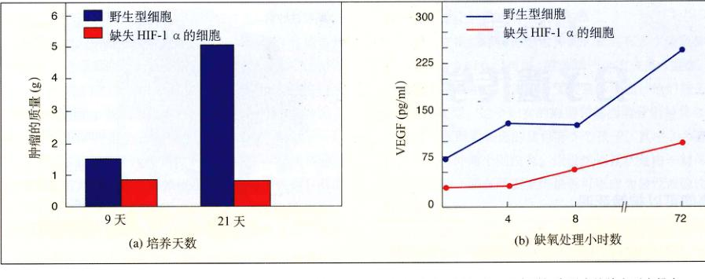
缺失 HIF-1 α 基因的细胞和野生型细胞的肿瘤生长 (a) 缺失 HIF-1 α 的细胞形成的肿瘤比野生型细胞形成的肿瘤要小得多。(b) 在缺氧状况下，缺失 HIF-1 α 的细胞所产生的 VEGF 蛋白水平较之野生型细胞要低得多。VEGF 具有促进毛细血管形成的作用。
然后研究人员让这些 HIF-1 基因敲除细胞在缺氧条件下生长。如果野生型细胞中的 HIF-1 基因确实通过促进血管形成来促进肿瘤生长，那么就应该预期这些基因敲除细胞 (null cell) 不能以这种方法促进肿瘤生长。
研究人员通过实验验证注射 HIF-1 α 基因敲除的细胞，并在对照实验中注射野生型细胞来检验基因敲除细胞促进肿瘤生长的能力。注射在无致和对照宿主动物身上的细胞都能够形成肿瘤，这些形成的肿瘤随后被检验并比较。
为了清楚地了解事实，要直接比较基因敲除细胞和野生型细胞实际形成新血管的能力，这是通过检验对血管形成和生长起关键作用的生长因子的 mRNA 水平来测定的。这种因子是一种蛋白质，叫做血管内皮生长因子 (VEGF, vascular endothelial growth factor)。细胞内 VEGF 的 mRNA 水平是将 VEGF 的 cDNA 探针与肿瘤中分离的 mRNA 杂交，然后再测定有多少肿瘤 mRNA 与 cDNA 探针结合。在平行研究中，抗体用来测定 VEGF 蛋白的水平。
实验结果
与野生型细胞相比，研究人员发现基因敲除细胞形成肿瘤的能力大打折扣，时间越长这种效果越明显（见上(a)）。21天之后，野生型细胞的肿瘤足足比 HIF-1 基因敲除细胞的肿瘤大5倍。很显然，破坏 HIF-1 会大大延缓肿瘤的生长。
基因敲除细胞这种减小肿瘤体积的表现更体现在 VEGF 蛋白分析的结果上（见上(b)）。在缺氧状况下，野生型细胞的 VEGF 蛋白水平上升，通过促进毛细血管生成来增加对肿瘤的快速氧供应。而基因敲除细胞瘤中的 VEGF 蛋白水平却相对较低，相应地对缺氧的反应也较慢。
不论是减小肿瘤体积还是降低 HIF-1 基因敲除细胞中的 VEGF 蛋白水平都支持了一个假说：HIF-1 在促进肿瘤血管形成中起到了重要的作用，在缺氧环境下，HIF-1 能够提高 VEGF 的水平。
血管形成抑制剂是否像 angiostatin 那样可作为治疗癌症的药物，是否真能够通过抑制 VEGF 起作用？Johnson 的实验室和许多其他的癌症中心都在进行着一系列的相关实验，谜底应该很快就会被揭晓。
Page 3 / 原始页码 267
第 14 章 DNA：遗传物质
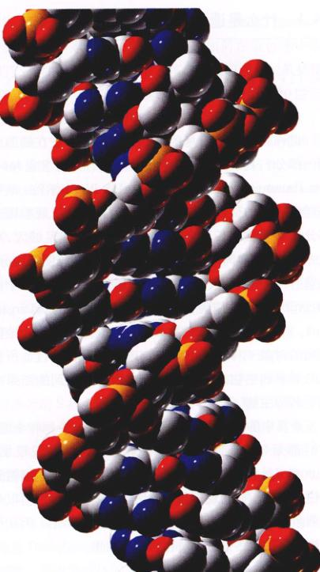
图 14.1 DNA 所有生物细胞中的遗传蓝图是这条长而卷曲的分子——脱氧核糖核酸 (DNA)。
在人们认识到遗传性状可以用减数分裂时染色体 (chromosome) 的分离来解释之后，又一个问题困扰了生物学家长达50年。什么才是染色体和遗传性状之间联系的本质？本章将列举一系列的实验，这些实验使我们对遗传的分子机制（图 14.1）的研究达到了现在这个水平，它们也是科学史上最为经典的实验。就像遨游在一本引人入胜的推理小说中一样，每一个结论又引发了新的问题。通向智慧的道路并非总是一条捷径，最本质的问题也并非总是那么显而易见。然而，无论实验之路如何曲折，我们对遗传机制的轮廓已逐渐清晰，它的全景已被清晰地展现出来。
Page 4 / 原始页码 268
14.1 什么是遗传物质
14.1.1 Hammerling 实验：遗传信息在细胞核中
也许关于遗传信息的最基本问题是：它在细胞的哪一部分？在 20 世纪 30 年代，丹麦的生物学家 Joachim Hammerling 工作于柏林的 Max Plank 学院，从事海洋生物学的研究。他将细胞切为几份，以观察哪一部分能够表达遗传信息。为此，他要求细胞足够大，可以方便地切割，同时细胞必须有明显的特征便于区分。他选择了一种可以长至 5cm 的单细胞藻类——伞藻 (Acetabularia) 作为他实验的模式生物 (model organism)。就像孟德尔选用豌豆、Sturtevant 选用果蝇作为他们研究的对象一样，Hammerling 选择了一种符合他所提出的要求的生物来研究，并假定由此得到的结果适用于其他生物。
伞藻的各个属有区别明显的假根、伞柄和伞帽，它们都是单个细胞的不同部分，细胞核在假根里。Hammerling 先做了一个预实验，他切除了一些细胞的假根或伞帽。他发现，那些被切除了伞帽的细胞可以从剩余的部分（假根和伞柄）中长出新的伞帽。因此他推测伞藻的遗传信息就藏在它的假根里。
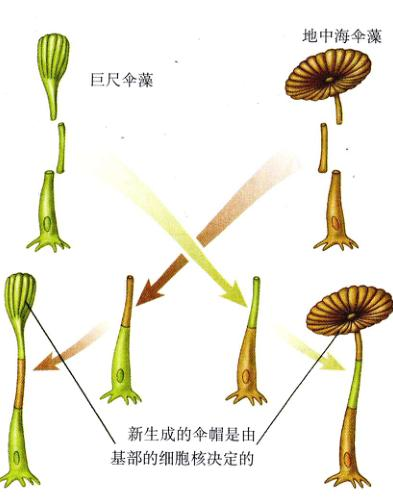
图 14.2 Hammerling 的伞藻交叉嫁接实验 他将一种伞藻的伞柄嫁接到另一种的假根上。在所有的情况下，最终长出的伞帽都是由含有细胞核的假根决定的，而非伞柄。
单个细胞手术
为了验证这个假设，Hammerling 选取了伞藻属的两个不同种，它们的伞帽有很大的差别。地中海伞藻 (A. mediterranea) 有一个圆形的伞帽，而巨尺伞藻 (A. crenulata) 则有一个分叉的花盘形伞帽。Hammerling 将巨尺伞藻的伞柄嫁接到地中海伞藻的假根上（图 14.2），长出的伞帽与巨尺伞藻略有不同。
接着 Hammerling 切下这个伞帽，第二次以及以后的每一次所长出的伞帽都与地中海伞藻的完全相同。这个实验有力地支持了 Hammerling 的假设，即形成某种类型伞帽的指令在细胞核中，而这些指令必须通过伞柄才能到达伞帽。
在这个实验中，最初长出的那个伞帽在形状上与后来的圆盘状伞帽不同，而像是二者的中间体。Hammerling 推测，这个与巨尺伞藻只有几分相似的伞帽是由已经存在于主轴中的指令指导，而这些指令早在主轴从巨尺伞藻切下时就已经存在其中了。相应地，对于那些所有随后产生的伞帽合成，都使用地中海伞藻假根中产生的信息，虽然它被嫁接了巨尺伞藻的伞柄。由于某些未知的原因，原先存在于主轴中的那些指令被“耗尽”了。我们现在知道这些遗传信息（以信使 RNA 的形式存在，在第 15 章讨论）由假根中的细胞核发出，经伞柄上传到生长的伞帽中。
14.1.2 移植实验：每个细胞都含有一整套的遗传信息
由于伞藻的假根中含有细胞核，Hammerling 推测细胞核可能是遗传物质的储存地点。这个假设的直接证明是由美国的两个胚胎学家——Robert Briggs 和 Thomas King ——于 1952 年完成的。他们将玻璃吸液管拉制出一个细尖，以此在显微镜下去掉蛙卵的细胞核，失去细胞核的蛙卵不再生长。接着他们为其植入一个细胞核——它来自于另一个已进一步分化的蛙胚细胞，这个被移植细胞核的蛙卵发育成一个成熟的蛙。很明显，细胞核指导着细胞的发育（图 14.3）。
Page 5 / 原始页码 269
1) 被成功移植的细胞核
是否生物体内的每一个细胞都可以指导产生一个完整的个体？Briggs 和 King 的实验不能给出确定答案，因为被植入细胞核的卵常常不能正常地发育。接着进行的两个实验明确地回答了上述问题。第一个实验是约翰·格登在牛津和耶鲁用另一种蛙做的，他将蝌蚪的细胞核植入去核卵中，这是一个困难的实验，他必须使供体和受体的分裂期同步。在一些情况下，卵可以正常发育，这就证明了进一步发育细胞的细胞核仍然保存有全部的遗传信息，它可以指导其他细胞发育。
2) 植物细胞的全能性
第二个实验由 F. C. Steward 于 1958 年在康奈尔大学进行。他将充分发育的胡萝卜小块（由韧皮部分离出来）放入含有培养液的培养瓶中。他观察到，组织块中分离出的单个细胞可分化并发育成根，当他将根固定在一个固体培养基上时，它们正常地发育育成整成熟的植株。Steward 的实验证明了，即使在成熟植物的组织内，单个细胞仍然是“全能”的——各自都含有一整套完整的遗传信息，可以发育成完整的个体。正如将在第19章中学习到的那样，动物细胞与植物细胞一样具有全能性 (totipotency)，一个成体动物细胞可以发育成一个完整的成体个体。
14.1.3 Griffith 实验：遗传信息可以在个体间传递
确定了细胞核储藏有遗传信息之后，人们的目光集中到染色体上，孟德尔学说似乎就是它是遗传信息的载体。孟德尔所研究的遗传信息单位——基因 (genes) 也就是特别为科学家关注，它们到底是如何在染色体中组织的？当时人们已经知道染色体含有蛋白质和脱氧核糖核酸 (DNA)。它们到底谁承载着基因？开始于 20 世纪 20 年代并延续了 30 年的研究最终回答了这些疑问。
在 1928 年，英国的微生物学家 Frederick Griffith 用一种病菌做了一系列实验，得到了料想不到的结果。他用一种致病的病菌——肺炎链球菌 (Streptococcus pneumococus) 感染老鼠，老鼠死于败血症。而当用肺炎链球菌的突变株感染老鼠，这种突变体缺少致病菌所有的英膜 (coat)，老鼠并无感染症状。似乎是由英膜导致了病症。这种病菌的正常致病菌在培养皿上形成轮廓整齐的光滑菌落，被称作 S 株。那种突变体由于缺少合成英膜所需的酶，形成粗糙的菌落，被称作 R 株。
为了确定英膜是否有毒性，Griffith 将致病的 S 株热杀死后注入老鼠体内，老鼠仍然很健康。作为对照，他又将杀死的 S 株与活的不致病的 R 株混合物注入老鼠体内（图 14.4）。意外发生了，老鼠出现了症状，很多老鼠死去。死亡的老鼠血液中发现了高浓度的致病菌，它们是活的有致病性的 S 株，而它们表面的特征原来是 R 型的。不知何故，指导多糖英膜合成的遗传信息由死的 S 株进入了活的 R 株体内，使得没有英膜的 R 株转化为致病的 S 株。转化 (transformation) 是指遗传信息由一个细胞进入另一细胞，并改变受体的遗传性状。
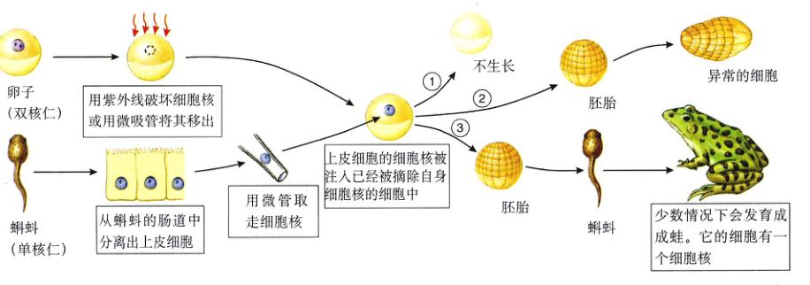
图 14.3 Briggs 和 King 的细胞核移植实验 两种蛙有不同的核仁数。其中一种蛙的细胞核被去掉，这可以用一根微吸管吸取或是更简单一些，用紫外线照射而破坏细胞核。从另一种蛙中取出细胞核植入前一种蛙的去核卵中。这个实验可能有三种结果：①不发育，也许是由于移植过程中对卵细胞造成了伤害；②能够正常地发育至早期胚胎阶段，但接下来的发育异常，无法存活；③正常生长发育至成熟的蛙。这只蛙是提供细胞核的那只蝌蚪后代，而非提供卵子的那只。仅有少数实验得到了这个结果，但是它们足以作为细胞核指导蛙发育的明证。
Page 6 / 原始页码 270
14.1.4 Avery 和 Hershey-Chase 实验：遗传因子是 DNA
1) Avery 实验
直到 1944 年人们才发现了参与链球菌转化的物质。通过一系列经典的实验，Oswald Avery 和他的同事 Colin Macleod 及 Maclyn McCarty 鉴别出他们称为“转化因子” (transforming principle) 的物质。他们首先准备了 Griffith 曾采用过的混合物，其中杀死的 S 链球菌和活的 R 链球菌组成。Avery 及其同事尽可能地从混合物中去除蛋白质，使提取物达到 99.98% 的纯度。虽然去除了几乎全部的蛋白质，转化的活性还是没有减小。而且，转化因子的特性在许多方面与 DNA 相似：
(1) 当用化学方法分析这些纯化后的因子时，其成分的排列与 DNA 十分类符；
(2) 当在离心机中高速旋转时，转化因子总是迁移到与 DNA 相同的液层（密度）；
(3) 从纯化的转化因子中分离脂类和蛋白质并不会降低它的活性；
(4) 蛋白酶和 RNA 酶都无法降低转化因子的活性；
(5) DNA 酶降低了转化因子的活性。
证据是颇具说服力的。他们得出结论：“一种含有脱氧核糖的核酸是肺炎链球菌 Ⅲ 型中转化因子的核心单元。”一句话，DNA 是遗传物质。
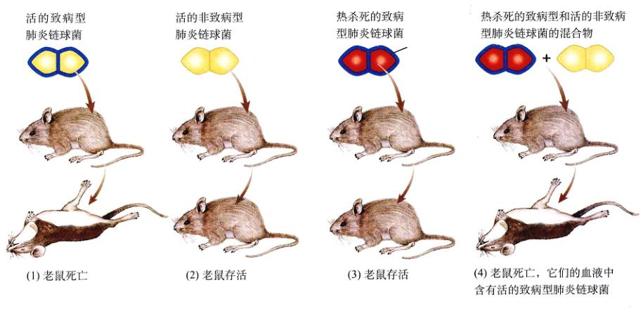
图 14.4 Griffith 发现了转化作用 (1) 注射致病型肺炎链球菌导致老鼠死亡。这种细菌表面有一层自身合成的多糖英膜。(2) 注射无英膜的活细菌并引起疾病，可是英膜本身并不是病因。(3) 当 Griffith 向老鼠注射有英膜的死细菌时，老鼠并未发病。(4) 但是当他将死的致病菌和活的非致病菌混合注射时，许多老鼠死亡，致病菌又出现了。他得出结论，活的细菌被死的致病菌转化了，也就是说指导英膜合成的遗传信息由死细菌转移到了活细菌上。
2) Hershey-Chase 实验
由于很多生物学家更倾向于认为蛋白质是遗传信息的载体，Avery 的结果最初并没有被广泛接受。1952年，Alfred Hershey 和 Martha Chase 提出了进一步的证据，支持 Avery 的结论。他们使用一种能够感染细菌的病毒——噬菌体 (bacteriophage) ——进行实验。我们将会在第33章进一步讨论病毒，它是由蛋白质外壳 (coat) 包裹着 DNA 或是 RNA (核酸) 而成的。当一个可以溶菌（可以导致细胞破裂）的噬菌体要感染细菌时，它首先与细胞的外表面结合，再将遗传物质注入细胞内部。在细菌内，噬菌体的遗传物质指导合成了成千上万的病毒，接着细菌破裂，即溶菌，进而释放出新病毒。
为了确定最初注入细菌的遗传物质，Hershey 和 Chase 使用了含有 DNA 而非 RNA 的噬菌体 T₂。他们分别用不同的放射性物质分别标记 DNA 和蛋白质外壳以便进行追踪。在一部分实验中，病毒在含有磷的放射性核素 (isotope) ³²P 的环境中生长，这样放射性核素就会出现在新合成的 DNA 分子中。在另一部分实验中，病毒在含有硫的放射性核素 ³⁵S 的环境中生长，同样的，在新合成的外壳蛋白的氨基酸中也会出现放射性核素。由于衰变时释放的粒子有不同的能量，³²P 和 ³⁵S 很容易区分。
当用标记的病毒感染细菌后，剧烈搅动细菌细胞以去除细胞表面侵染病毒的蛋白质外壳。这一方法去除了几乎所有含 ³⁵S 的标记（也就是几乎所有的病毒的蛋白质）。然而，含 ³²P 的标记（即病毒的 DNA）已经进入细菌，并不断地出现在被释放出来的噬菌体中（图 14.5）。因此，被注入细菌内部并指导合成后代的遗传物质是 DNA，不是蛋白质。
Page 7 / 原始页码 271
14.2 DNA 的结构
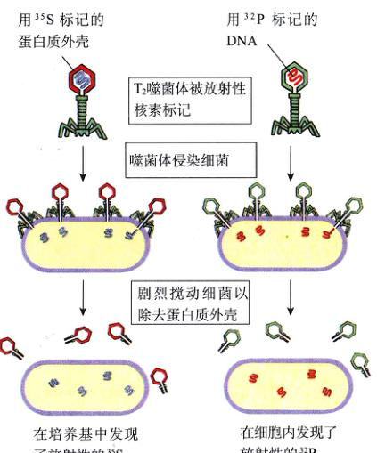
图 14.5 Hershey-Chase 实验 Hershey 和 Chase 发现放射性的 ³⁵S 并未进入细菌，而 ³²P 却进入了。他们得到结论，是病毒的 DNA 而非蛋白质指导了新病毒的繁殖。
14.2.1 核酸的化学性质
在孟德尔的工作发表仅4年后，德国化学家 Friedrich Miesher 于 1869 年发现了 DNA。Miesher 从人的细胞和鱼类的精子中分离出一种白色物质。它的氮磷含量都与当时已知的细胞组中分不同，这使得他相信自己发现了新物质，称之为“核素 (nuclein)”，因为它似乎与核紧密相关。
1) Levene 的分析结果：DNA 是聚合体
由于核素带有弱酸性，它接着被称为核酸 (nucleic acid)。在后来的50年中，由于不了解它在细胞中的功能，生物学家对它研究甚少。20 世纪 20 年代，生物化学家 P.A. Levene 确定了 DNA 的基本结构（图 14.6）：①磷酸基 (PO₄)；②五碳糖；③含氮碱基，嘌呤（腺嘌呤 A、鸟嘌呤 G）和嘧啶（胞嘧啶 C、胸腺嘧啶 T，RNA 中由尿嘧啶 U 代替胸腺嘧啶 T）。由于这几个部分含分量基本相同，Levene 正确地推断 DNA 和 RNA 是由这 3 种成分重复构成的。每一个单位都是由一个糖和一个磷酸加上一个碱基组成，叫核苷酸 (nucleotide)，核苷酸间通过不同的碱基区别开来。
为了区分 DNA 和 RNA 中不同的化学基团，通常要对碱基和糖的碳原子进行编号，以便命名与某个碳原子相连的化学基团。糖的 4 个碳原子和 1 个氧原子形成一个五元环。如图 14.7 所示，这些原子从氧原子起顺时针方向由 1' 编号至 5'，“ ' ”表示这些碳原子是在糖中而不是在碱基中。在这种编号体系下，磷酸基是与糖的 5' 碳相连，碱基则是连在 1' 碳上，另外，一个自由的羟基被加到 3' 碳上。
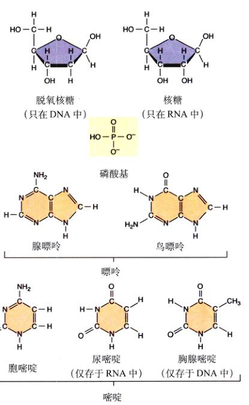
图 14.6 DNA 与 RNA 的核苷酸构成 DNA 与 RNA 的基本单位由 3 部分组成：一个五碳糖（在 DNA 中是脱氧核糖，在 RNA 中是核糖）、一个磷酸基以及一个含氮的碱基（嘌呤或嘧啶）。
Page 8 / 原始页码 272
表 14.1 Chargaff 对于 DNA 碱基构成的分析
| 物 种 |
碱基组成（mol 百分比） |
| A |
T |
G |
C |
| 大肠杆菌(K12) | 26.0 | 23.9 | 24.9 | 25.2 |
| 肺结核分枝杆菌 | 15.1 | 14.6 | 34.9 | 35.4 |
| 酵母菌 | 31.3 | 32.9 | 18.7 | 17.1 |
| 鲱鱼 | 27.8 | 27.5 | 22.2 | 22.6 |
| 鼠 | 28.6 | 28.4 | 21.4 | 21.5 |
| 人 | 30.9 | 29.4 | 19.9 | 19.8 |
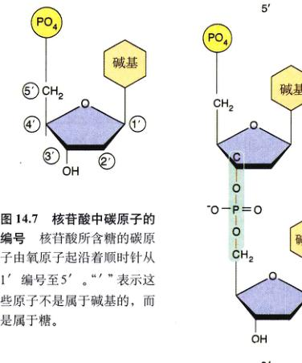
图 14.7 核苷酸中碳原子的编号 核苷酸所含糖的碳原子由氧原子起沿着顺时针从 1' 编号至 5'。“'”表示这些原子不属于碱基的，而是属于糖。
由于 5' 磷酸基和 3' 羟基之间可以发生化学反应，这使得 DNA 和 RNA 得以形成由核苷酸构成的长链结构。一个核苷酸的磷酸基和另一核苷酸的羟基发生脱水反应，生成一个水分子而形成共价键，将二者相连（图 14.8）。这一连接被称为磷酸二酯键 (phosphodiester bond)，因为磷酸基是通过一对酯键 (P-O-C) 与两个糖相连。由这一反应生成的聚合物在两端仍然有一个 3' 羟基和 5' 磷酸基，因此它也可以与其他羟基相连。这样千方个核苷酸聚和为长链。
无论 DNA 和 RNA 链有多么长，它们总有一个含自由 5' 磷酸基的末端，另一端则含有一个自由 3' 羟基。因此每一个 DNA 和 RNA 分子自身都具有方向性，我们也可以毫不混淆地提及分子的任何一端。习惯上碱基的顺序总是由 5' 写到 3'。因此“GTCCAT”表示：
5' pGpTpCpCpApT - OH 3'
其中的磷酸基由 “p” 表示。注意，它与下面这个反过来表示的分子不同：
5' pTpApCpCpTpG - OH 3'
Levene 最初的研究发现 DNA 的 4 种核苷酸出现的频率大致相同，这个结果后来被证明是错误的。它导致人们错误地认为，DNA 只是一个由 4 种核苷酸简单重复构成的复合物（如：GCAT...GCAT...GCAT...GCAT...）。如果这个次序真的一成不变，我们很难解释它是如何储存遗传信息的。Avery 曾认为 DNA 是转化因子，但是基于上文的理由，人们最初并未接受这一论断。似乎事情看起来更可能是这样的：DNA 只起到支持染色体结构的作用，而蛋白质才是起着核心作用的遗传物质。
2) Chargaff 的分析：DNA 并非一个简单重复的聚合体
第二次世界大战后，人们用更加灵敏的技术手段重复了 Levene 的 DNA 分析实验，获得了完全不同的结果，4 种碱基在 DNA 中的含量其实并不相同。Erwin Chargaff 进行了更加缜密的研究，他发现核苷酸在 DNA 中的组成会因其来源而变化（表 14.1）。这清晰地显示了 DNA 绝不仅仅是简单重复的聚合体，可能还有遗传物质所需的编码信息的性质。虽然这个变化反常，Chargaff 还是发现了双链 DNA 的一个重要规律：在 DNA 中，腺嘌呤的数量总是与胸腺嘧啶相同；鸟嘌呤则与胞嘧啶相同。这些发现常被统称为 Chargaff 规则 (Chargaff's rules)：
(1) A 的含量总是与 T 相同，G 的含量总是与 C 相同；A=T, G=C；
(2) 嘌呤 (A、G) 和嘧啶 (C、T) 的数量总量是一样的。
Page 9 / 原始页码 273
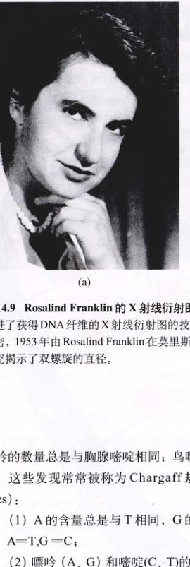
图 14.9 Rosalind Franklin 的 X 射线衍射图暗示了 DNA 的结构 (a) Rosalind Franklin 改进了获得 DNA 纤维的 X 射线衍射图的技术。(b) 这张 X 射线衍射图片揭示了自然界秘密，1953 年由 Rosalind Franklin 在莫里斯·威尔金的实验室获得。(c) 对这些图片的研究揭示了双螺旋的直径。
14.2.2 DNA 的三维结构
在认识了 DNA 是遗传信息的载体之后，研究者开始着手了解一个个看似简单的分子如何完成如此复杂的功能。
1) 富兰克林：用 X 射线衍射勾勒 DNA 的结构
Chargaff 所指出的规律在当时并未立即显现其重大意义。但是，在英国化学家 Rosalind Franklin (图 14.9a) 进行了 DNA 的 X 射线分析之后，这一意义就十分明显了。在 X 射线衍射中，分子被一束 X 射线轰击。当射线遇到原子时，它们的轨迹被改变，衍射的图样也被感光底片记录。这个图样看似向平静的湖面投人一块石子（图 14.9b），经过精密的分析它们可以提供关于分子三维结构的信息。
X 射线衍射对于那些能制备成完美晶体的分子效果最佳。但在 Franklin 进行实验的年代，人们还无法获得天然 DNA 分子的纯结晶，所以她必须使用纤维状的 DNA。富兰克林在英国生物化学家 Maurice Wilkins 的实验室工作，她可以制备比前人更纯的、有统一朝向的 DNA 纤维。利用这些纤维，富兰克林成功地获得了天然 DNA 的 X 射线衍射草图。她的衍射图样显示 DNA 具有螺旋的或螺旋锥型结构，它的直径为 2 nm，螺距为 3.4 nm (图 14.9c)。
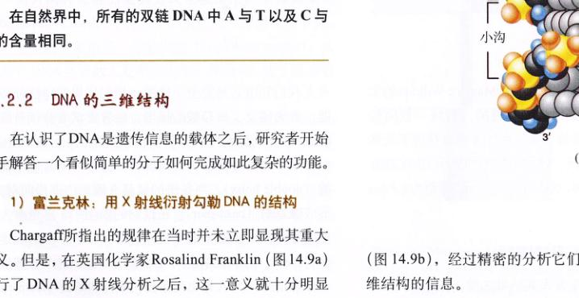
Page 10 / 原始页码 274

图 14.10 DNA 是双螺旋 (b) 1953 年，基于查加夫规则和富兰克林的 X 射线衍射结果，詹姆斯·沃森（右）以及弗朗西斯·克里克（左）推断出 DNA 的结构。
2) 沃森和克里克：双螺旋模型
在富兰克林 1953 年发表其结果之前，詹姆斯·沃森 (James Watson) 和弗朗西斯·克里克 (Francis Crick) 已经通过非正式的途径了解到了她的实验结果。这两位剑桥大学的年轻学者很快提出一种 DNA 分子的可能结构（图 14.10），今天我们知道它是完全正确的。他们运用演绎法分析问题，首先建立了核苷酸的模型，接着尝试着将核苷酸配成与人们已经了解的 DNA 结构信息相匹配的模型。他们尝试了许多可能性，直到最终认为它可能是一个双螺旋 (double helix)，两条链的碱基在螺旋内部指向对方；形成碱基对 (base-pair)。在他们的模型中，总是有一大些的嘌呤指向相对小的嘧啶，这样保证了分子的固定直径为 2 nm。由于碱基之间可以形成氢键，这个双螺旋是十分稳定的。DNA 是由两条反向平行的单链 (antiparallel strand) 组成，一链由 3' 到 5'，另一条则由 5' 到 3'。碱基对在一个平面上，并由于疏水作用间隔 0.34nm，起到使分子整体稳定的作用。
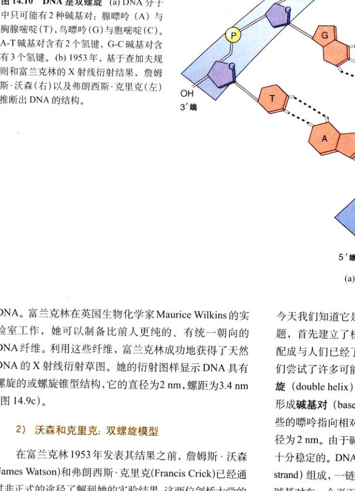
图 14.10 DNA 是双螺旋 (a) DNA 分子中只可能由 2 种碱基对：腺嘌呤 (A) 与胸腺嘧啶 (T)，鸟嘌呤 (G) 与胞嘧啶 (C)。A-T 碱基对含有 2 个氢键，G-C 碱基对含有 3 个氢键。
沃森-克里克模型解释了 Chargaff 的结果：在双螺旋中，腺嘌呤和胸腺嘧啶间形成 2 个氢键，但是它却不会与胞嘧啶形成氢键。同样，鸟嘌呤与胞嘧啶间形成 3 个氢键，它也不会与胸腺嘧啶形成氢键。所以，腺嘌呤和胸腺嘧啶在 DNA 中的比例总是相同，胞嘧啶和鸟嘌呤也是一样，这都是因为碱基配对的缘故。
Page 11 / 原始页码 275
14.3 DNA 是如何复制的
14.3.1 Meselson-Stahl 实验：DNA 的复制是一个半保留过程
沃森-克里克模型直接说明了遗传信息的复制基础是互补性 (complementarity)。DNA 分子的一条链可以是任何顺序的碱基排列，但是这个顺序完全决定了与之相对应的单链的碱基顺序。比如，一条链的碱基是 5' -ATTGCAT- 3'，那么另一条链的碱基必然是 3' -TAACGTA-5'，因此双螺旋中的任意一条链都与另一条链互补。
DNA 双螺旋的互补性质为它的精确复制提供了一个简易方法。如果有人想要复制 DNA，他只需合成出与暴露的单链中碱基互补的核苷酸，就可以形成两条有相同碱基序列的姐妹双螺旋。DNA 这种形式的复制叫做半保留 (semiconservative)，因为虽然最初双螺旋的碱基序列在复制中被保留下来，双螺旋本身却没有，相反地，双螺旋的每一条链都成为复制品的一部分。
另外两种可能的复制方式也被提出：全保留模型 (conservative model)，认为作为亲代的双螺旋完全不变，而产生全新的复制品；分散模型 (dispersive model)，认为亲代 DNA 会分散入复制品的每一条链中，使之成为旧 DNA 和新 DNA 的混合体。
加利福尼亚亚科技学院的 Matthew Meselson 和 Franklin Stahl 在 1958 年对以上 3 种假说进行了验证。这两位科学家培养细菌，培养基中含有重放射性核素 ¹⁵N，它可以被细菌吸收，成为 DNA 碱基的组成。经过数代，比较那些在含有轻放射性核素 ¹⁴N 培养皿中生长的细菌，它们的 DNA 密度更大一些。Meselson 和 Stahl 接着将这些细菌从含有 ¹⁵N 的培养皿中转移到含 ¹⁴N 的培养基中，并在不同的时间收集它们的 DNA。
通过使用重金属氯化铯收集 DNA，并在离心机中高速旋转溶液，Meselson 和 Stahl 将不同密度的 DNA 分离出来。超速离心机产生的巨大离心力使得铯离子向试管的底部运动，从而产生了铯离子的浓度梯度，也就是溶液的密度梯度。每一个 DNA 分子在试管中浮浮沉沉，直到达到与之密度完全相同的位置。由于含 ¹⁵N 的链密度大于含 ¹⁴N 的链，前者会移动到试管中具有较大密度的位置。
在转移细菌之后立即收集的 DNA 密度都很大。然而随着细菌在含 ¹⁴N 的培养基中完成第一次 DNA 的复制，密度下降到 ¹⁴N-DNA 和 ¹⁵N-DNA 之间的一个中间值。第二次复制之后，出现了两种密度的 DNA，其一具有中间密度，其二则与 ¹⁴N-DNA 的密度相同（图 14.11）。
Meselson 和 Stahl 对他们的结果作出了如下推断：在第一次复制之后，每一条子 DNA 都是有一条来自亲代的重链和一条轻链的复合体。当杂合链再次复制时，一条重链又形成了又一个复合体，而轻链则产生了轻链的双螺旋（图 14.12）。这个实验清楚地证明了沃森-克里克模型的预言，DNA 具有半保留复制的特性。
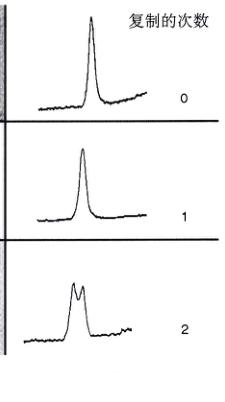
图 14.11 Meselson-Stahl 实验的关键结果 这些 DNA 带的照片（左）和扫描图是来自 Meselson 和 Stahl 密度梯度实验。在第 0 代，所有的 DNA 都是重链的，一次复制后又都具有混合的密度，两次复制后是轻链或混合体。
Page 12 / 原始页码 276
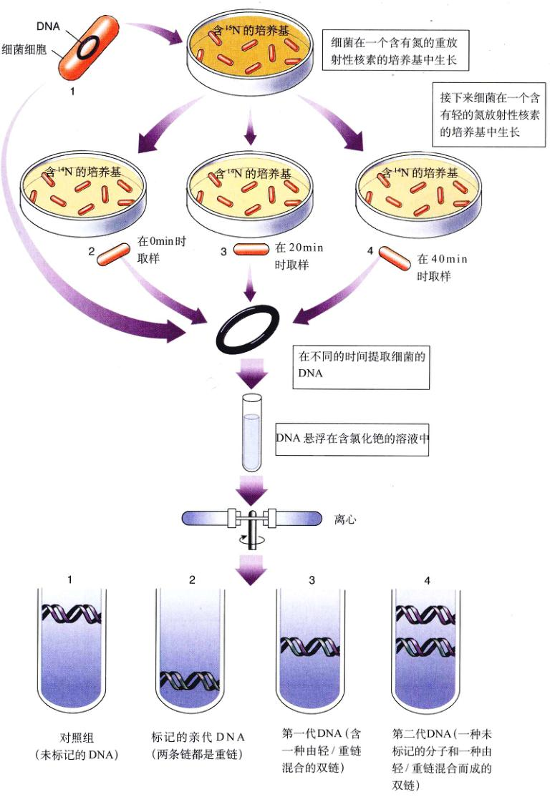
图 14.12 Meselson-Stahl 实验：半保留复制的证据 细菌在含有较重 ¹⁵N 的培养皿中繁殖多代之后，被转移至新的培养皿中，其含有较轻的 ¹⁴N。其后，又在不同的时间取样。将它们的 DNA 溶解在氯化铯溶液中，并在离心机中高速离心。由于铯离子很重，它有向试管底部沉积的趋势，因而建立起铯离子的密度梯度。DNA 分子在这个梯度中沉浮，直至达到与自身密度相同的区域，并悬浮在此位置。含有 ¹⁵N 的 DNA 比含 ¹⁴N 的重，因此它在铯离子密度梯度中沉至一个较低的位置。在 ¹⁴N 中培养一代后，细菌产生一种 DNA，它具有 ¹⁴N-DNA 和 ¹⁵N-DNA 密度之间的一个中间值。这就证明了双链中只有一条含有 ¹⁵N 的重链。在 ¹⁴N 中生长两代后，出现了两条带：其一具有中间密度（双链中的一条含有 ¹⁵N），其二则是密度较小（不含 ¹⁵N）。Meselson 和 Stahl 得出结论，在 DNA 双螺旋的复制中，双链分开并且与新合成的单链组成新分子。
Page 13 / 原始页码 277
14.3.2 复制的过程
为了使之更加有效，DNA 的复制必须迅速而精确。相关的机制已经被详尽地研究了近 40 年，而我们在已经了解了很多。DNA 的复制开始于分子上的一处或几处，在那些地方被称为复制起点 (replication origin)（图 14.13）的特殊核苷酸序列。DNA 复制酶——DNA 聚合酶 Ⅲ (DNA polymerase Ⅲ) 以及其他一些酶启动了一个复杂的过程，它们催化核苷酸互补地加到不断延伸的 DNA 链上（图 14.14，表 14.2 中列出了细菌中与 DNA 复制有关的酶）。在详述这一过程之前，我们先具体介绍一下 DNA 聚合酶 Ⅲ。
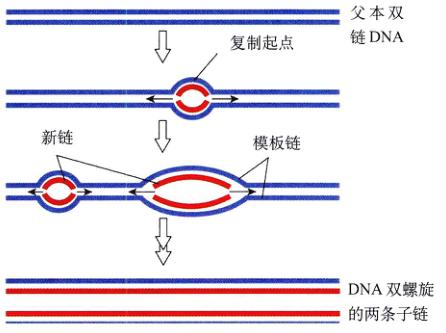
图 14.13 复制的起始点 在一个被称为复制起始点的区域，DNA 双螺旋被打开，形成两条分开的链，每一条链都可以作为复制新链的模板。真核细胞的 DNA 分子含有多个复制起始点。
1) DNA 聚合酶 Ⅲ
大肠杆菌所含的 DNA 聚合酶 I 是最先被确定的 DNA 聚合酶，它是一种相对较小的酶，在 DNA 的复制过程中起着重要的支持作用。典型的大肠杆菌复制也称为 DNA 聚合酶 Ⅲ，它比前者大 10 倍，在结构上也更加复杂。比起其他 DNA 聚合酶，我们对 DNA 聚合酶 Ⅲ 了解得更多一些，故在此予以详细讨论。
如图 14.15 所示，DNA 聚合酶 Ⅲ 含有 10 种不同的肽链，它是由两个相似复合体构成的二聚体。每个复合体催化一条 DNA 链的复制。
每个复合体中都有一种特有的蛋白质起关键作用。
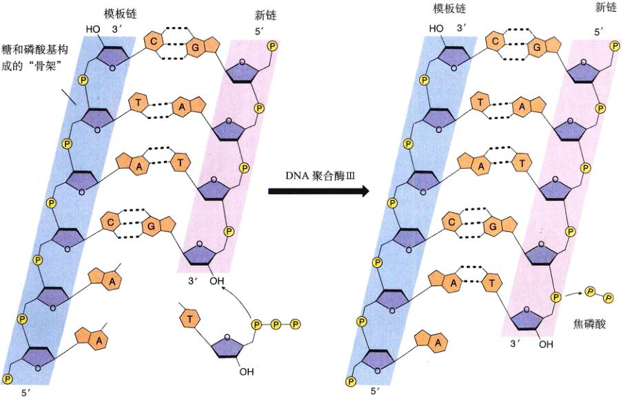
图 14.14 在 DNA 复制时，核苷酸是如何被加入的 DNA 聚合酶 Ⅲ 和其他酶催化了向不断延伸的子链上增加核苷酸的反应。加上一个核苷酸分子后，两个磷酸基以磷酸的形式脱离。
Page 14 / 原始页码 278
在众多的亚基中，α 亚基负责向一条由 5' 端向 3' 端伸展的链加上核苷酸，小一些的 ε 亚基则由 3' 向 5' 端校对错误，而环状的 β₂ 亚基是一个二聚体，它将 DNA 聚合酶与 DNA 双链紧紧钳在一起。聚合酶 Ⅲ 使 DNA 高速地通过酶复合物，可达每秒 1000 个核苷酸（100 个完整的螺旋，0.34 μm）。
2) 引物是必需的
DNA 聚合酶 Ⅲ 的一个重要特征是其只能向一条已经配对的 DNA 单链上添加核苷酸，因此 DNA 聚合酶不能合成一条新链上最初的几个核苷酸。另一种被称为引物酶 (primase) 的 RNA 聚合酶合成了RNA 引物 (primer)，它是一个含大约 10 个核苷酸的 RNA 序列，并与 DNA 互补。DNA 聚合酶 Ⅲ 可以辨别这个引物，通过向其增加核苷酸构筑新链。引物中的 RNA 核苷酸接着被 DNA 的核苷酸替换。
3) DNA 的两条链以不同的方式合成
DNA 聚合酶 Ⅲ 的另一重要特性是它只能向 DNA 链的 3' 端（有一个轻基和 3' 碳相连的一端）增加核苷酸，这意味着在延伸的 DNA 单链上，复制总是由 5' 端向 3' 端进行。由于进行复制的 DNA 分子两条链是反向平行，在每个复制叉上，新链总是与其母链反向（图 14.16），因此新链的延伸必然有不同的机制！前导链 (leading strand) 是朝着复制又口延伸的，它的伸展就是简单地在 3' 端不断加上核苷酸。反之，滞后链 (lagging strand) 则是背向复制又口复制，它先连接合成许多小片段，再将小片段连接起来。冈崎片段 (Okazaki fragment) 在真核细胞中有 100~200 个核苷酸长，在原核细胞中则长达 1000~2000 个核苷酸。每个冈崎片段都是由 DNA 聚合酶 Ⅲ 按照 5' 至 3' 的方向合成，由接近复制叉口方向开始合成，以后逐渐背离。当聚合酶达到滞后链的 5' 端时，另外一种酶，DNA 连接酶 (DNA ligase) 与这些片段相连。DNA 进一步解旋，新的 RNA 引物产生，DNA 聚合酶向前跃进了 1000~2000 个核苷酸的距离（向着复制叉口的方向），它又产生新的冈崎片段。如果仔细地观察 DNA 复制过程的电镜照片，有时看到一条临近复制又的长约 1000 核苷酸的模板链像是单链。由于前导链的过程是连续的，而滞后链的复制则是间断的，DNA 的整体复制是半不连续的 (semidiscontinuous)。
表 14.2 大肠杆菌的 DNA 复制蛋白
| 蛋白质 |
功 能 |
大小 (kd) |
每个细胞包含的分子数 |
| 解旋酶 | 将双链解旋 | 300 | 20 |
| 引物酶 | 合成 RNA 引物 | 60 | 50 |
| 单链结合蛋白 | 稳定单链区域 | 74 | 300 |
| DNA 促旋酶 | 缓解螺旋的旋致力 | 400 | 250 |
| DNA 聚合酶 Ⅲ | 合成 DNA | 900 | 20 |
| DNA 聚合酶 I | 消除引物并填充空隙 | 103 | 300 |
| DNA 连接酶 | 连接 DNA 片段 | 74 | 300 |
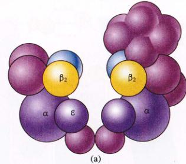
图 14.15 DNA 聚合酶 Ⅲ (a) 这个复合体包含了 10 种蛋白质链。蛋白质是二聚体，因为 DNA 的双链需要同步的复制。催化亚基 (α)，校对亚基 (ε) 以及“滑移、固定”亚基 (β₂)（黄色与蓝色）都一一标出。(b) “滑移、固定”亚基环绕着 DNA。(c) 使得 DNA 分子像绳子穿过圆环那样通过催化亚基。
Page 15 / 原始页码 279
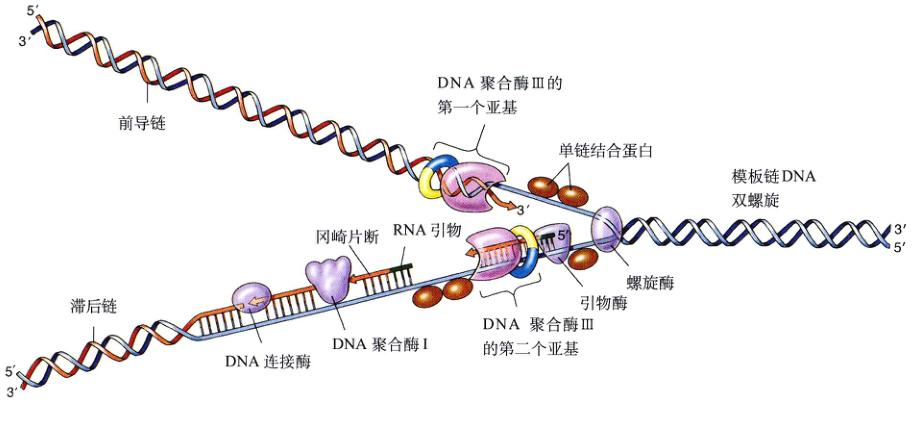
图 14.16 DNA 复制叉 解旋酶将双链打开，单链结合蛋白使单链稳定。复制有两种机制。(1) 连续合成：引物酶合成了一小段 RNA 引物，随后 DNA 聚合酶 Ⅲ 向前导链的 3' 端加入核苷酸。DNA 聚合酶 I 最终用 DNA 的核苷酸取代 RNA 的引物。(2) 不连续合成：引物酶首先在滞后链的 5' 端加入一段 RNA 引物，随后 DNA 聚合酶 Ⅲ 在其后加上核苷酸，直至缺口被补满。DNA 聚合酶 I 最终将 DNA 核苷酸取代引物，而 DNA 连接酶将小片段连成滞后链。
4) 复制的过程
DNA 双螺旋的复制过程十分复杂，研究它花去了数十年的时候。它由 5 个环环相扣的过程组成：
(1) 打开 DNA 双螺旋：必须将十分稳定的 DNA 双螺旋打开，以便在相互分离的单链上进行半保留复制。
第一阶段：启动复制。启始蛋白 (initiator protein) 与发生复制的区域结合，这就触发了一系列复杂的打开螺旋的相互作用。
第二阶段：解旋。在启动复制之后，解旋酶 (helicase) 与一条链结合，并延伸其运动，从而将另一条链推挤分开。
第三阶段：稳定单链。DNA 双螺旋的解旋部分是依靠单链结合蛋白 (single strand binding protein) 加以稳定的，它与暴露的单链结合，使它们免于断裂或是再次产生螺旋。
第四阶段：缓解解旋时产生的旋转力。由于复制以每秒 1000 个核苷酸的速度进行，在复制叉之前的母链也要以每秒 100 转的高速旋转！拓扑异构酶 (topisomerase)，或更通俗的名字是促旋酶 (gyrase)，可以缓解这一旋转力，它切断一段单链，使其能够绕着另一条完整链旋转，然后再将其重新接上。
(2) 生成引物：没有引物，母链上并不能生成新的 DNA，因为 DNA 聚合酶需要含 3' 端的引物来启动复制过程。这一不可或缺的引物是一小段 RNA，它是由一类特殊的 RNA 聚合酶——引物酶 (primase)，在一个俗称引发体 (primosome) 的多亚基复合物中合成的。为什么是 RNA 引物而非 DNA？在暴露的母链上开始的复制可能产生错误，RNA 将这些最初的复制产物标为“暂定”，便于以后切除这些错误的离发区。
Page 16 / 原始页码 280
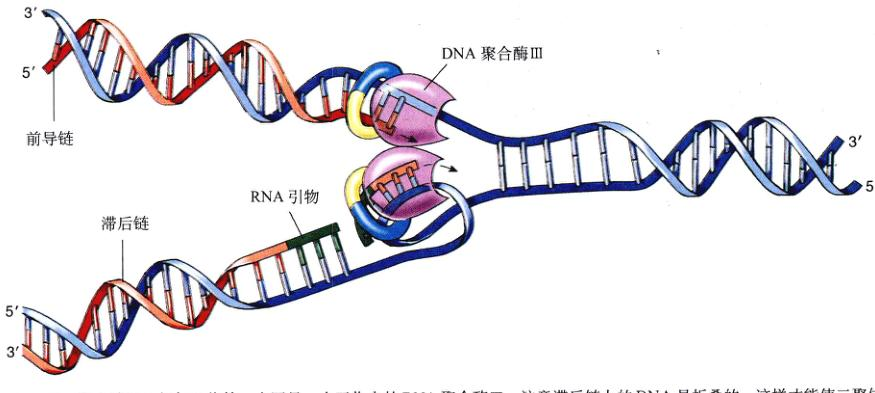
图 14.17 DNA 聚合酶 Ⅲ 是如何工作的 本图是一个工作中的 DNA 聚合酶 Ⅲ。注意滞后链上的 DNA 是折叠的，这样才能使二聚体的 DNA 聚合酶 Ⅲ 在两条链上的合成同步进行。这也使得每一个复制完成的冈崎片段 3' 端与下一个片段的起点相邻。
(3) 合成互补链：下一步，DNA 聚合酶 Ⅲ 二聚体与复制又结合。前导链与聚合酶的一半结合，而滞后链必须反转才能与另一半结合（图 14.17）。DNA 聚合酶 Ⅲ 在两条母链上同步前行，也就是使得每条单链上的互补序列同时形成。
(4) 去除引物：现在轮到 DNA 聚合酶 I 将引物去掉并填充缝隙，也就是冈崎片段之间的缝隙。
(5) 连接冈崎片段：当冈崎片段间的所有缝隙都被补上，DNA 连接酶就将片段连成滞后链。
14.3.3 真核细胞 DNA 的复制
在真核细胞中，DNA 是包装在染色体的核小体中的（图 14.18）。染色体上每一个独立进行复制的区域，称复制子 (replicon)，它的长度为 1 万~ 100 万个碱基对，而多数是十万个碱基对。每一个复制子都有自己的复制起始点，在某个时刻则可能有多个区域同时发生复制，这可以通过电子显微镜观察复制中的染色体而观察到（图 14.19）。每个区域的复制机制基本上与原核细胞相同，使用同样的酶。速度是真核细胞采用多复制起始点的主要优势：人细胞的复制需 8h，但如果只有一个复制起始点，时间将延长到原来的 100 倍。通过对复制过程的调节，保证了最终只产生一个复制品，目前还不十分清楚细胞是如何做这种调控的。这也许它与 DNA 上阶段性的抑制蛋白以及启动蛋白有关。
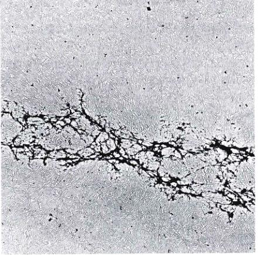
图 14.18 一条人类染色体的 DNA 这条染色体已经被去除了与之相连的绝大多数包装蛋白质。照片下部的黑色物质是剩余的起着支持结构作用的蛋白。
Page 17 / 原始页码 281
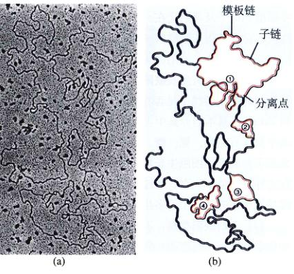
图 14.19 真核细胞的染色体有许多复制叉 在这个电子显微图中 (a) 中 4 个复制单位（每个区域含两个复制叉）正在产生子链，如图 (b) 示意图中的红色区域。
14.4 基因是什么
14.4.1 一个基因一条肽链的假说
随着 DNA 的结构之谜被解开，其他生物学家转而研究孟德尔的基因与 DNA 的关系。
1) Garrod：遗传疾病可能与特殊的酶有关
1902 年，英国医生 Archibald Garrod 和他的同事 William Bateson（一位早期孟德尔学派的遗传学家）一同工作。他发现他在所遇到的病人中，有一些疾病似乎在特定的家族中更为普遍。通过对这些家族几代人的研究，他发现某些疾病的发生似乎是由于单一的隐性基因表现结果。他认为这些病症都是孟德尔性状，它们都源自携带家族中一位祖先遗传信息的改变。
Garrod 详细研究了几种这样的疾病。在尿黑酸尿症 (alkaptonuria) 中，病人的尿液中含有尿黑酸 (alkapton)，这种物质在空气中被氧化使尿液呈现黑色。在正常人群中，尿黑酸会被分解为小分子。独具慧眼的 Garrod 认为尿黑酸尿症患者缺少一种分解尿黑酸的酶。他推测其他一些遗传疾病可能也反映了酶的缺失。
2) Beadle 和 Tatum：基因决定酶
由 Garrod 的发现可以引发一个划时代的猜想，储存在染色体 DNA 中的信息可以决定特定的酶。然而，直到 1941 年，上述猜想才被斯坦福大学的 George Beadle 和 Edward Tatum 证明，他们通过一系列实验为之提供了确凿的证据。Beadle 和 Tatum 开始人为地制造孟德尔式的突变，进而研究这些突变对生物体的影响（图 14.20）。
(1) 一个明确的体系：Beadle 和 Tatum 的试验得到了明晰结果的原因之一，是因为他们对实验研究的对象做了一个出色的选择。他们选择了面包霉菌脉胞菌 (Neurospora)，这种真菌在实验室中可以在一个确知的培养基中生长（它的基本培养基只含有已知的物质，如葡萄糖和氯化钠，没有那些尚未确定的物质，比如酵母粉）。Beadle 和 Tatum 将脉胞菌孢子置于射线中，希望一些孢子的 DNA 受到损伤，而损伤区域与真菌合成生长所需的营养物有关（图 14.20）。这种 DNA 的变化称为突变 (mutation)，发生这种突变（本实验中是缺少合成一种以上营养物质的能力）的生物叫突变体。最初这些受辐射的孢子及其后代在一个含有确定养料的培养基上生长，它含有生长所需的一切养分，这样由于辐射造成的、任何有着生长缺陷的突变体都可以存活。

图 14.20 Beadle 和 Tatum 分离营养缺陷突变脉胞菌 (Neurospora) 的过程 这种霉菌很容易在含有人工培养基的试管中生长。在这个实验中，用射线照射孢子以提离突变率。它们进而被置于一种“完全”培养基中生长，这种培养基含有生长所需的一切养分。当真菌菌落在完全培养基上生长出来后，单个的孢子就被置于一种“基本”培养基中，这种培养基缺少一些真菌在正常条件下可以合成的营养物质。任何真菌孢子，如果其不能在基本培养基上生长，却可以在完全培养基上生长，那么，可能的原因是，控制营养物质合成的一个或一个以上的基因发生了突变。为了确定哪种基因发生了突变，可以在基本培养基中加入特殊的养料。本图中显示的是分离精氨酸突变，细胞无法合成精氨酸。这种细胞无法在基本培养基中生长，但只要加入精氨酸就可以生长了。
Page 18 / 原始页码 282
(2) 分离具有生长缺陷的突变体：为了确定那些受到辐射的孢子后代中哪一种会使得有关键的缺陷，Beadle 和 Tatum 在基本培养基中再度培养这些真菌，基本培养基中只含有盐类、氨、糖、一些维生素和水。如果细胞失去了合成其他细胞生长所必需的养分的能力，就无法在这样的环境中生存。通过这种手段，Beadle 和 Tatum 成功地确定并分离了许多生长缺陷的突变体。
(3) 分辨缺陷类型：下一步向基本培养基中加入各种化学物质，以观察哪一种会使得突变体生长。利用这一方法，他们可以分辨出具体的生长缺陷类型。例如，加入了精氨酸可以使许多精氨酸突变株开始生长。当把它们进行染色体定位时，发现精氨酸突变簇集于三个区域。
3) 一个基因 / 一条肽链
对于精氨酸生物合成途径上所需的每一种酶，Beadle 和 Tatum 都能分离出这种酶的突变菌株，而这些突变总是发生在少数几个特殊的染色体位点上。更为重要的是他们发现每种酶都对应一个位点。因此，对于他们在发现的每种酶缺陷的突变体，都与染色体上的单一位点的突变有关。Beadle 和 Tatum 推断，基因通过指导特定的酶的合成来发挥作用，而每种基因只编码一种酶的信息（图 14.21）。他们称这种关系为一个基因一个酶假说 (one gene/one enzyme hypothesis)。由于很多酶是由多个蛋白质或多肽亚基构成，它们又分别由一种基因编码决定，今人们更多地称之为一个基因 / 一条肽链 (one gene/one polypeptide)。
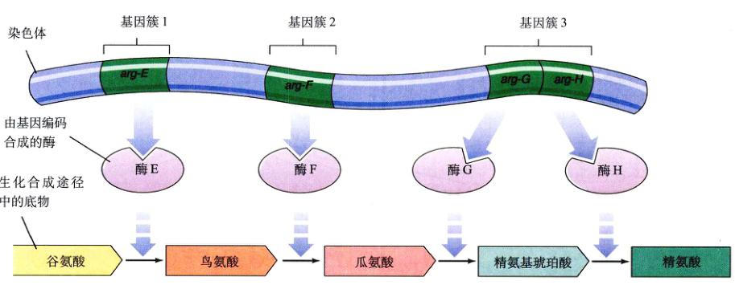
图 14.21 一个基因 / 一条肽链假说的证据 Beadle 和 Tatum 分离出许多精氨酸突变的染色体定位，它们在染色体簇集于三个区域，而这些区域与编码精氨酸生物合成酶基因所在的位置是一致的。
Page 19 / 原始页码 283
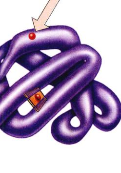
图 14.22 遗传病的分子基础 镰刀型贫血症是由一种隐性基因引起的，这种基因编码血红蛋白的 β 链。它表现为这条链的第 6 个氨基酸由谷氨酸变为缬氨酸，进而引起了蛋白质三级结构的变化，使其降低了载氧功能。
酶的活动与生命的各个部分息息相关。它们调控核酸、蛋白质、碳水化合物以及脂类的合成。因此通过调控酶和其他蛋白质，DNA 调节了整个机体自身的活动。
14.4.2 DNA 是如何编码蛋白质结构信息的
基因编码何种信息才能决定一种蛋白质？在一段时期，由于蛋白质的结构出乎想象的复杂，人们对这个问题不甚了解。
1) Sanger：蛋白质是由确定顺序的氨基酸构成
就在沃森和克里克确定 DNA 结构的 1953 年，这种状况得到了改变。英国生物化学家 Frederick Sanger 经过多年的工作，宣布了一种蛋白质——胰岛素 (insulin) 的全部氨基酸序列。胰岛素是一种小的蛋白激素，也是最先被确定氨基酸序列的蛋白质。Sanger 的发现非同凡响，因为它第一次证实了蛋白质拥有确定的氨基酸序列——对于所有的胰岛素，每个分子的氨基酸序列相同。他的工作促使人们研究更多蛋白质的氨基酸序列，很快人们就清楚所有的酶和其他蛋白质都是拥有确定序列的氨基酸长链。因此，确定一个蛋白质（比如酶）所需的信息是氨基酸的排列数据。
2) Ingram：蛋白质中一个氨基酸的改变会产生深刻的影响
在 Sanger 的先驱性工作之后，Vernon Ingram 在 1956 年发现了镰刀型贫血症 (sickle cell anemia) 的分子基础，这种孟德尔式的遗传病是由于一种蛋白质的缺陷引起的。通过分析正常人和患者的血红蛋白，剑桥大学的 Ingram 发现：镰刀型红细胞症的发生是因为在这这种蛋白质中一个单一的位点由谷氨酸代替了缬氨酸（图 14.22）。编码血红蛋白的等位基因仅仅在一个氨基酸的位置上有差异。
这些实验以及相关的一些其他实验，最终使我们对遗传的基本单位有了清晰的了解。镰刀贫血症以及其他一些遗传疾病是由于蛋白质的结构发生改变，而这种改变则是氨基酸序列的变化引起的，氨基酸序列的改变又是由染色体上一段特定区域的核苷酸序列改变决定的。例如，导致镰刀型贫血症的突变是在决定谷氨酸的位点上，一个胸腺嘧啶被腺嘌呤取代，而这个位点也就由谷氨酸转变为缬氨酸了。决定蛋白质中氨基酸序列的核苷酸序列被称为基因。虽然大多数基因是决定蛋白质或蛋白质亚基的，还有一些是用于产生特殊的 RNA，其中许多在合成蛋白质的过程中起着重要的作用。
Page 20 / 原始页码 284
小 结
14.1 什么是遗传物质
- 真核细胞将遗传信息储存在细胞核中。
- 对于病毒、细菌和真核细胞，遗传信息储藏在核酸中。核酸的改变可以引发遗传性状的改变。
- 当被放射性物质标记了 DNA 的病毒感染细菌时，是其 DNA 而非蛋白质外壳进入细菌内部，这说明遗传物质是 DNA 而非蛋白质。
14.2 DNA 的结构
- Chargaff 提出 DNA 中的腺嘌呤总是与胸腺嘧啶含量相同，而鸟嘌呤总是与胞嘧啶相同。
- DNA 具有双螺旋结构，由两条核苷酸链组成，腺嘌呤和胸腺嘧啶以及鸟嘌呤和胞嘧啶之间形成氢键。
14.3 DNA 是如何复制的
- DNA 中的遗传信息通过半保留复制极其精确地复制。
- 在复制过程中，DNA 双螺旋解旋，继而两条新链沿着母链以相反的方向生成。一条是通过在尾端连续地增加核苷酸，另一条则是先合成长度在 100~2000 个核苷酸的片段，再连接到该链的末端。
14.4 基因是什么
- 绝大多数的遗传性状反应了酶的作用。
- 这些性状得以遗传的原因是决定酶结构的信息储存在 DNA 中。
- 每一种酶都是由 DNA 上被称为基因的一段特殊区域所编码的。
问 题
- 在 Hammerling 做的关于伞藻实验中，巨尺伞藻的伞柄被嫁接到地中海伞藻的假根上，其后发生了什么？
- Hershey 和 Chase 是如何确定病毒的哪种成分包含有病毒的遗传信息。
- DNA 的三维结构是什么？为什么这个结构与 Chargaff 观察到的嘌呤与嘧啶的比例相吻合？
- Meselson 和 Stahl 是如何证明 DNA 的复制是半保留式的？
- 前导链是如何复制的？滞后链呢？这两条链复制机制不同，其根本原因何在？
- Beadle 和 Tatum 在脉胞菌的实验后提出了什么假说？他们如何改变这种生物个体的 DNA，如何确定这些变化影响到了生物合成过程中的酶？
媒体资源
- 科学家是如何思考的：DNA 是遗传物质
- 技能测验：Griffith 的实验、Hershey / Chase 实验
- DNA 的结构、核酸、DNA 的结构
- DNA 的复制、DNA 复制、复制的过程
- 科学家是如何思考的：DNA 的复制是半保留式、DNA 的合成并不断续
- 科学家是如何思考的：基因决定酶
- 技能测验：一个基因一条肽链的证据